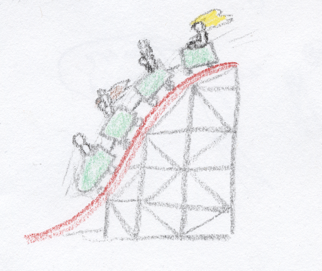

This paper is split up between 2 parts. The left part is the lesson. The right part is the reasons I included that part of the lesson. You should change parts that you don’t agree with.
Give the lesson part to kids who are about age 3-6 or possibly demonstrate certain qualities such as:
- Expect you to be impressed with their understanding of society.
- Share with you in their success in ability to control themselves without you prompting them.
- Demonstrate their willingness to calmly participate in society.
- It appears they want you to mediate a disagreement involving name calling.
When they are around age 8-11 you can go through the reasons part one-on-one, or in a focus group. Don’t assign it as homework. All questions are optional. Please note whether or not you mentioned to the kid(s) when they were 3-6 that you intended to follow up with questions at a later point in life.
The questions in highlighted blue are sincere attempts to use the child’s knowledge and first hand experience to improve the lesson. They are not there to get a child to discover and declare something about themself to you. You should remember what they say and keep it in mind when you are attempting to improve the lesson. Because they might not yet have the words to say the exact meaning of their answer, you should repeat what you heard them say in your own words back to them, to confirm (in a “you're the expert now” type tone).
The questions highlighted in yellow are yes or no questions and just require a yes or no answer. Whether they elaborate or not should be equally prepared for, and received. You should remember what they say and use it to improve the lesson.
The questions highlighted in purple are their to help you understand the child better, and better care for them. They might also provide some insight on how to improve the lesson.
Sometimes your mind will tell you to do things that you don’t know why, or can no longer remember why. These are called your instincts. |
I put this here because it appears that this is something kids go through everyday, but, never seems to be explained to them. Seeing it written and defined might be a relief. I'm slightly reconceptualizing the word "instinct" because I believe approaching it from this way will help the most. Reconceptualization is when you take different parts of similar ideas and rearrange, combine, make distinct, add to or remove from their meaning. Discussing how to reconceptualize and re-define ideas is important. It allows you to help the next generation be better able to take the world in. A good foundation helps one better handle, operate, and build off it. A great foundation will also help people handle the unexpected. Also, a simplified foundation helps them understand it faster so they can quickly move onto other things. These are the goals one should have in mind when one attempts to reconceptualize ideas. I used to have this as: “Sometimes your mind will tell you to do things that you don’t know why. These are called your instincts.” I felt like it failed to capture the experience of being taken care of by people who can't relate to you. You may have rigorously thought through your action earlier, but can’t remember and/or explain the specifics behind your decision. Did you hear these words when you were younger? Did they provide some relief? Did you find any different useful approaches? What were they? |
||||||||||||
|---|---|---|---|---|---|---|---|---|---|---|---|---|---|
If you are all by yourself, and don’t know much about the world yet, it’s a very good idea to do what your instincts tell you. |
I put this here because sometimes it’s easy for people to forget that you can’t see what they see or know what they know. If you are encountering a situation for the first time, your instincts are truly your best bet. I do not want people to give kids a hard time for making the best decision they could at the time. However, I know that they will probably run into people who will in the future. I want to prepare them for that. Do you think those words do that? |
||||||||||||

If your instincts tell you to do something like build an interesting thing out of some sticks, it is a good idea. It might help you in the future in ways you don’t know yet. |
I put this here because playing is probably one of the healthiest things a child could do. It’s important foundational stuff that our ancestors of the past built on and revised and revised until they came up with more and more complex tools. Those who play when they are young become more skilled, well rounded, non-violent, members of society. You play possibly because you want to be those things. Stuart brown's presentation: Play is more than just fun |
||||||||||||
If you are alone and lost at night, your instincts will probably tell you to start crying and try to find someone to help. It is probably a very good idea to listen to your instincts! |
I put this here, because sometimes their instincts would take complete control of the situation for survival, and I want them to be ready for that. Even though they don't understand what's going on, there is still nothing wrong with them. I could have conceptualized this by saying that darkness makes you scared and when you are scared you find your parents, but I think explaining it in this way is more useful. Do you think conceptualizing it this way will be the most helpful to young kids? |
||||||||||||
Sometimes your instincts will tell you to do something that is a bad idea. |
I put this here because I want kids to know in words what they probably intuitively know. They will know more about what the best thing to do is as they gain experience. |
||||||||||||
If a fire alarm goes off and everyone is scared, your instincts might tell you to go hide, but, if there really is a fire, you should get out of the building! |
I put this here because I want kids to have an example of what sort of curve balls their instincts would throw their way. Did any events like this happen to you when you were little? |
||||||||||||
It can sometimes be very hard to figure out when you should listen to your instincts and when you should not. You should be very proud of yourself when you finally start to get the hang of it! |
I put this here because, after the advent of Massively Multiplayer Online games (MMOs) in about the 90s-2000s, many kids became addicted to them. This lead to parents wanting them to stop. Generally, they followed 2 different trains of thought: 1. What can I do to force, coerce, or convince them to stop? 2. What positive elements does this game provide that could be incorporated into real life to make it as enjoyable as the game? This passage is more focused on the latter. The words are an attempt to establish a sort of "rules of the game" in a way they sorta feel like they are making progress as they gain experience. Also, I want them to feel like there is one additional person out there who would care about the progress they make, if that person knew what they went through (whoever wrote this lesson). I used to not care about the progress that kids made. however, I now believe that, if a child wants you to be something that you are not, you ought to try your best to be that, and see if you like it. If not, then tell them why you didn’t. My use of the phrase "get the hang of it" was probably inspired by this video Was feeling like you are making progress important? Does it matter that someone else cares if you make progress? |
||||||||||||
Exercise: Draw a line from the play activity that your instincts may tell you to do; to a grownup activity it might help with when you get older.
|
I put this here because I wanted to give them more examples of good instincts. I put the “important part of modern civilization” in here because it’s a concept that drove many of my actions when I was younger, but I never heard it discussed. If you did this exercise when you were younger, did you understand it? Did you understand or get the gist of “invent an important part of modern civilization”? Would you add or change anything? What would you add or change? |
It can sometimes be hard to not listen to your instincts. |
I put this here because I want to introduce them to the concept of obsessions and compulsions, but I didn't want to use too many big words in this lesson. They will probably silently deal with them without being able to talk about it. Here are some reconceptualizations of these terms that might be useful: Obsessions: Things that your instincts keep telling you to do that you don’t want to. Compulsions: taking the actions that your instincts tell you, so your instincts will stop telling you. Stimulus: something you see, hear, or sense that causes your instincts to tell you what to do. Supernormal Stimulus: an extreme version of a stimulus that tends to cause an obsession. Is that similar to what you experienced when you were little? Do you think they should be left out or put in? Stuart Mcmillen’s comic on supernormal stimuli |
|---|---|
|
 If you see something that looks scary, but you know from past experiences it is actually safe and harmless, you may challenge yourself by choosing to do the scary thing. |
I put this in here because I wanted them to know that challenging yourself is ok, and if I met them, at least one part of me would be proud of them for challenging themselves. When you were little, did you expect grownups to be impressed when you challenged yourself, but it turned out they actually didn’t care, or were disappointed, scared, or angry? The book “Free to Learn” by Peter Singer recommends letting kids challenge themself when they play. |
Sometimes your instincts will tell you to do something that is bad, but you can’t think of anything else to do. |
I put this here because I want children to have some idea why they do mean things without a “you are mean!” type explanation. I have (rarely) seen what seems to be children forcefully will themselves to do nothing over the overwhelming compulsion to do something moderately mean. Before I got into child rearing, I was extremely hesitant of giving kids excuses to do mean things. Example: after reading this, a child could go back into the world and begin using the excuse “I couldn't think of anything nice to do” when they do mean things on purpose. I’ve even met some children who used excuses similar to that. However, I remember when I was young I expected my parents to try a bunch of different things and see how they worked. So, despite my great fear of empowering some bad apples, I tried it anyway. I found that made the environment more peaceful for reasons I don’t understand yet. Perhaps, refusing to give good people concepts that could help them because a bad apple exists or could exist would be a mistake. Do you think refusing to give concepts to good people because they might be bad is the way we should treat kids? Do you know anyone who did anything mean on purpose and felt like they were using the words “I couldn’t think of anything nice” as an excuse? Have you experimented with anything like that? What happened? |
If you see two of your friends calling someone else names they don’t like, your instincts will probably tell you to join your friends to call them names too. Even if you know it’s bad, you still might want to listen! Maybe you can’t think of anything else to do. |
I put this here because I wanted to give them an example of a situation I've seen a lot. I think a lot of kids will go through something like that: getting called names, and calling someone else names. I want them to be further prepared if they get the urge to call someone else names. Did you ever get into a situation where you could think of “nice” and “mean” things to do? Did you take the “nice” actions or did you still go with the “mean” one? |
Other reasons you might call other people names:
|
I decided to include other plausible reasons besides “maybe you couldn’t think of anything else.” Giving them a plausible and fixable reason might just be enough to cause them to change. These words might also help them communicate some other concepts that are on their mind. However, again, I am afraid of giving bad apples more excuses. Are any of these close to the reason you would call someone else names? Would you add or change any reasons? |
If you overcome your instincts and choose to do nothing, you should be very proud of yourself! You can always think of something different to do later, so, next time, you can be ready! |
I put this here because I believe that the person who should suffer in this situation is not the innocent bystander. This passage also implies some things: It implies that people you know will not hold your mistakes against you. Some still might think of you as the person who did nothing. “Why are you just standing there doing nothing!?” is a phrase that some kids might hear growing up.I still hear it myself, sometimes. It also implies mature adult culture will provide them alternatives to doing nothing. At the time of writing, no such lesson exists. How do you stop your friends from calling others names!? Do you think that kids should always be encouraged to do nothing over doing something they know is mean? What sort of cases would it be ok? Did you try doing nothing when you were little, how did it go?
Do you think I should include something that covers what you should do if someone asks you why you are just standing there doing nothing? |
Even if you are uncomfortable doing nothing, just remember, calling people names hurts them deep inside. It hurts someone more to be called names than it does you to do nothing. |
I think there is a burden doing nothing over doing something “bad.” It has a price ones social standing (it’s pretty embarrassing to stand there and do nothing) and possibly their development. The trade off is that the victim pays a price in their development and social standing. The innocent party should not pay this price. Calling people names really hits people hard deep in their core, and is something that may still affect them into adulthood. Whatever uncomfort it causes you to do nothing, I almost guarantee the person who gets called a name feels worse. I highly recommend you avoid it. Do nothing, for now. After doing this lesson, did you notice less name calling between you and your friends? Was it more fun to play with them? |
Sometimes grownups have trouble overcoming their instincts too. |
I put this here because I wanted to go over some adult struggles they may see that match their own struggles. |
|||||||||||||||
|---|---|---|---|---|---|---|---|---|---|---|---|---|---|---|---|---|
If they are scared of something that is not very dangerous, they have what is called a “phobia”. |
I put this in here because I want kids to be prepared for what sort of things their brain has in store for them in the future, and a phobia might be one of them. They might run into adults that experience them. They most certainly will meet a person who has them sometime. Did you get any phobias or have you met anyone who had them? I am worried that letting them know about it will cause them to develop a phobia themselves. On the other hand, I am also worried that not telling them will make them think copying a grownup who has a phobia is OK. Do you think it’s good or bad to talk about this sort of stuff with kids when they are little? |
|||||||||||||||
A common phobia for grownups is flight phobia: fear of flying on airplanes.
|
I put this in here to show them an example of a common phobia. If they are to be wise leaders someday, I want them to protect their dear ones from things that are actually dangerous, not things that appear dangerous. Just focusing on appearance, in some cases, would hedge them closer to a needless loss of life. Also, it might cheer them up to know grownups struggle with some of the same things they do. Did knowing grownups face the same type of difficulties help you? Source for phobia data: The epidemiology of DSM-IV specific phobia in the USA: results from the National Epidemiologic Survey on Alcohol and Related Conditions. through Joyful Public Speaking Source for death chance data: NSC odds of dying |
|||||||||||||||
Everyone usually gets different instincts and maybe even phobias as they get older. Even after you get the hang of the ones you have now, new ones may come along. |
I put this here because I want to warn them about what challenges their mind may have in store for them in the future. Did you ever get any new instincts that surprised you? |
|||||||||||||||
Discovering you have an instinct you don’t want is very hard. You might be sad if you find a new one, but you should also be proud of yourself. Discovering it is the first step to getting the hang of it! |
I put this here, because I don't want kids to get their hopes up that the battle will end. It may end up being a constant battle. A battle some may lose, even if they try their best. It might be sad to hear that you have to live with some instincts you don’t like. Because you want what’s best for the society and the world, you will have to leave some important jobs to people who don’t have to deal with this problem. In the end, they will do it better. I put in here that you are making progress if you find a new one because people should not try to pretend they don’t have something that they should deal with. What was the hardest instinct you had to overcome? Do you have any instincts yet that were so hard to overcome that you could not? |
|||||||||||||||
Exercise:Underline the action that your instincts might make hard to resist doing.Circle the action that your experience might tell you is a better idea.
|
The first time someone has physical superiority over another, some may be automatically compelled to take advantage of it. After doing this exercise, did you resolve to not make fun of helpless people? Did you still make fun of helpless people, even if you resolved to stop? Introducing the concept of hoarding. Would you add or change anything? What would you add or change |

Figuring out when you should use your instincts and when you shouldn’t might take a lot of time. Figuring out how to overcome them might take some time too. |
I put this here because I wanted kids to know that it takes time to figure out how to handle their own brain. You should be patient with yourself, and hopefully other people will be patient with you. Where you around both patient and impatient people when you were little? Which ones helped you progress faster? |
||||||||
|---|---|---|---|---|---|---|---|---|---|

Sometimes, people will try to make you feel bad for listening to your instincts and something bad happens, even when it was the best you could think of at the time.
|
I put this here because I want kids to be their best. I don’t want them to be motivated by the fear of punishment. That is known to hinder their creativity but helps with mechanical skill. I do not want them to do tasks a robot could do. I want them to creatively affect the world positively in their own way, not because of fear, but because they want to for their own reasonable reasons. I want them to have some tools to cope with those who use fear to keep them from being their best. RSA Animate - Drive: The surprising truth about what motivates us. |
||||||||
If they do, you should feel sorry for them, because they were probably treated the same before, and can’t think of a better way to treat you. |
I put this here because lots of times when I was little I did not know what to make of a situation. Telling them how they should feel before it happens sounds useful. They probably don’t know how they should feel. Did you know what you were feeling when something new happened to you, or did it take some time? Do you think it would be useful for adults to tell kids how you should feel for some situations before they happen? |
||||||||
They might need help reminding them to be patient if they lose their patience. If you feel comfortable, you should say something like: ”I’m sorry. I was trying my best. Do you forgive me?” |
I put this here because I believe a goal of parenting should be to help kids deftly deal with the harshness of the outside world as quickly as possible. The thought process for this part is:
Are “I’m sorry. I was just trying my best, Do you forgive me?” good words for this? Did you try saying this when you were little? How did it go? Asking for forgiveness is something I read was a good thing to do. I forget where I read it unfortunately. But, I have used such words myself with others and it does seem to work in practice. |
||||||||
You can say and feel different things when it looks like someone is trying to make you feel bad. As you get older you might find different ways right for the situation and right for you. |
I put this here because I want to let them know that it's hard to prepare for every possible situation. There are different ways to deal with it and I think it's OK if they mess up. Did you ever try to act how you thought adults wanted you to act, but were punished anyway? Do you think adults should punish kids even if they know it was too confusing for the kids to know what to do? |
||||||||
|
The 2nd one is from non-violent communication: trying to understand their needs. I have used these words, they seem to work. The 3rd one is from non-violent communication: telling them your needs. To be honest, I have not used these types of words yet. I’m sure they would do the trick. though. Have you tried any of these when you were young? How did it go? When you were younger, was there some situations where advice like this wouldn’t have worked? what were they? |
||||||||
If you are still able to be nice and talk to someone, even after they say you are bad, you should be very very VERY proud of yourself! Very few people can do that. |
I put this here because people being calm when the perceived injustice against them is very rare. Calmness when dealing with every situation is a quality of a true mature person. It’s something I want to see children grow up to have. They may think they have a perfectly good reason to be mad at you, you may have a perfectly good reason to be mad at them; but neither of you will get anyway being mad at eachother. Even if you believe the other person shouldn’t be mad; you don’t have control of the other person. The only person you have control over is yourself. So it’s all up to you. Do you think calmness is the quality of a mature person? Would you make any other changes to this worksheet? What sort of changes? Question for those who administered this lesson: Did you mention or indicate to the kids when you first taught the lesson that you intended to follow up on it? |